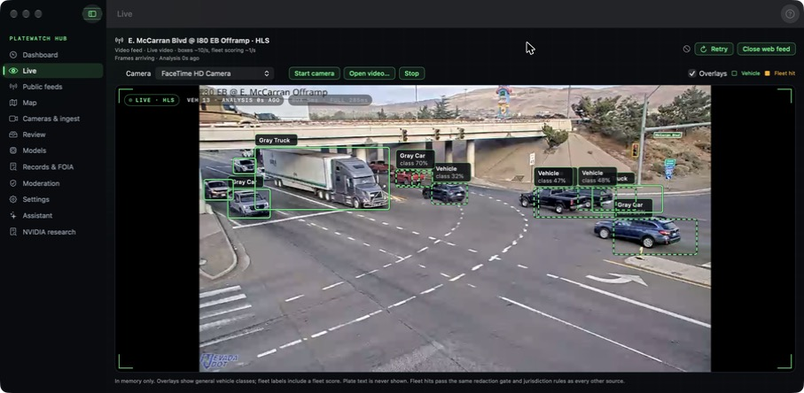
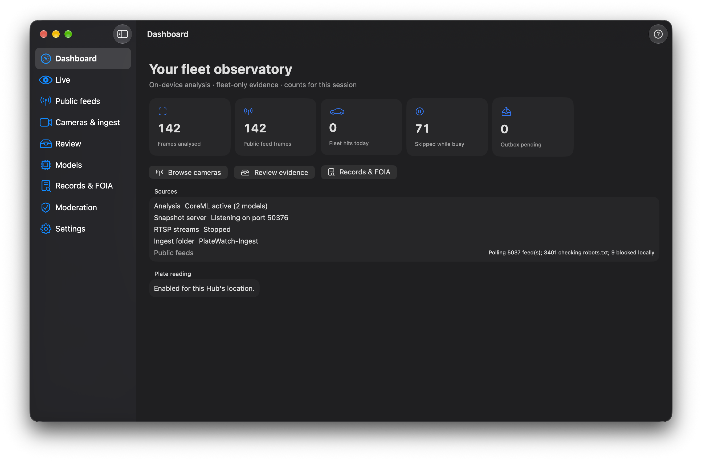
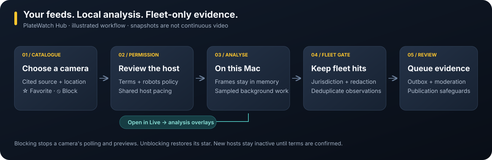
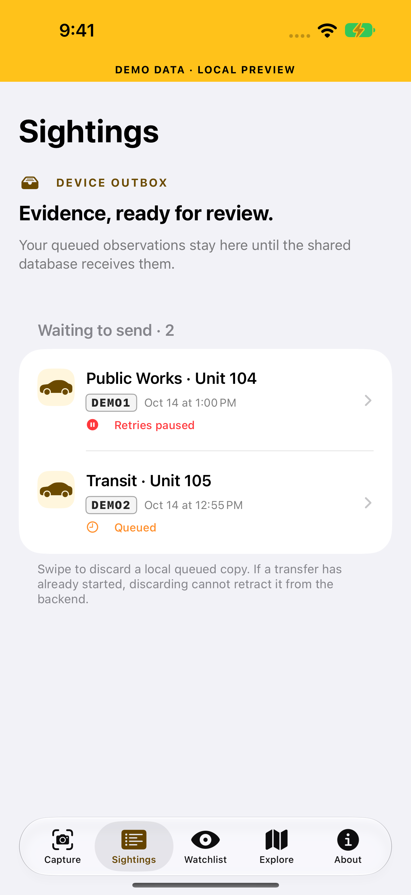
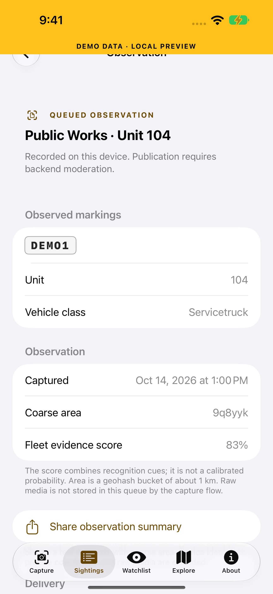
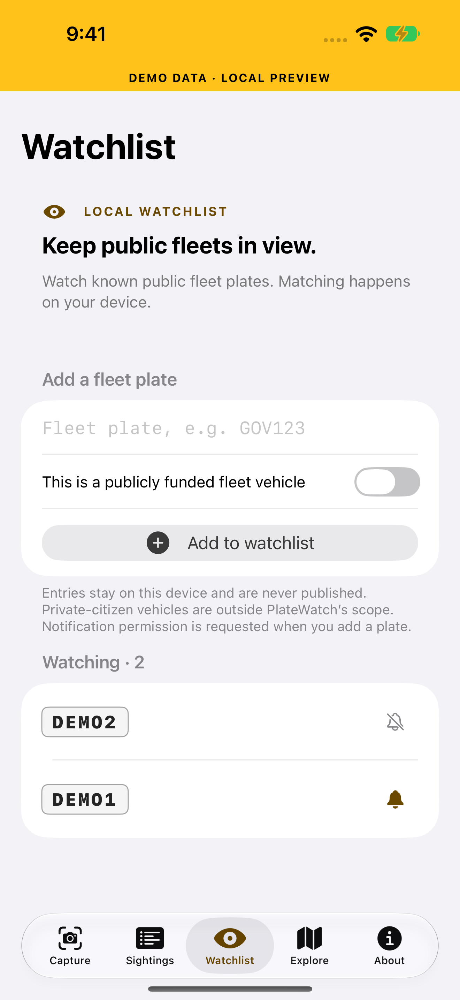
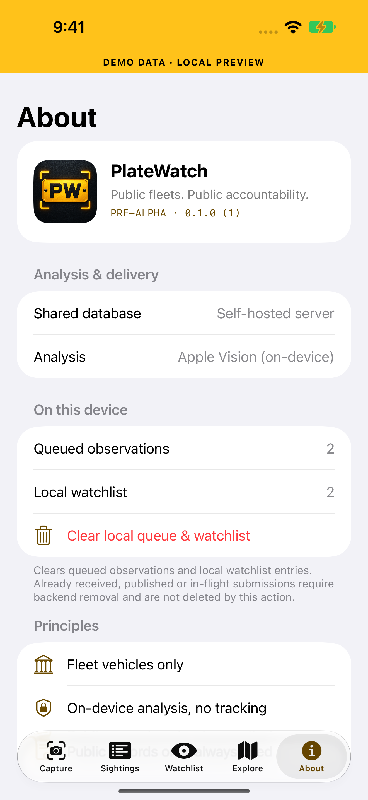

Watch the public fleet. Watch the record.
On-device recognition for taxpayer-funded vehicles. Live traffic video with tracked boxes, reviewable local evidence, FOIA drafting and cited public records. Private citizens are out of scope by design.

Everything sensitive stays on the device.
Only structured, human-reviewable detections that clear a fleet-confidence gate can ever sync. Frames stay in memory.
Local models
Vision text recognition plus CoreML detectors. No cloud inference on camera frames.
Fleet-only ingestion
A redaction gate drops private-plate reads before anything leaves the device. Location stays coarse until a fleet match.
Provenance everywhere
Agency, unit and cost enrichment carries a citation to a public record. No citation, no enrichment.
Humans decide
Borderline cases go to a review queue with intact local evidence and a content hash.
One console for public camera feeds.
Browse and map public feeds, pin favorites, block bad views, and open any camera in Live. Records & FOIA drafts and tracks fleet requests. A local, authenticated MCP interface lets coding agents inspect feeds and records under review rules.


Capture and review on the phone.
Simulator screenshots of synthetic data from the October 14 build: they show the interface, not recognition accuracy.




Apple-first today. Everywhere next.
The reference server already runs anywhere Docker does. What is missing is the on-device pipeline outside Apple silicon, because every shipped model is CoreML. Exporting to ONNX and TFLite is the gate for the rows below marked planned.
| Platform | State | What exists |
|---|---|---|
| macOS | working | Hub console: moving HLS, tracked overlays, review, FOIA, agent tools. |
| iPhone | field QA open | Capture, review, watchlists, clip export. Handheld low-light and thermal acceptance pending. |
| Apple Watch | device gate | Installed and running on hardware; push delivery still to be exercised. |
| CarPlay | blocked | Needs Apple's entitlement and a real vehicle. |
| Linux · Raspberry Pi · Jetson | reference agent | Python edge agent and Docker server. Desktop client and ONNX model runtime planned. |
| Web | explorer | Read-only public-sighting explorer over the REST mirror. |
| Android phone | read-only | Public-sighting consumer builds against the shared REST types. Capture planned. |
| Windows | planned | Not started. Server and web work today; native client follows the ONNX runtime. |
| Wear OS · Android Auto | planned | Not started. Follows Android capture. |
The maintainer has Apple hardware only. Windows, Linux and Android are verified through CI runners, emulators and virtual machines, and through community testers. That is where you can help.
Honest about what is trained and what is not.
Models keep their upstream licences and are published on the models-v0.1.0 release. A model is wired in only when it clears a measured bar.
| Model | State | Notes |
|---|---|---|
| Plate detector | released | Project-trained with Create ML; won a head-to-head against YOLOv8n. |
| Vehicle detector | released | COCO YOLOv8n. Fine-tuning on fleet imagery is next. |
| Vehicle type | fixing | Released, but its registry input description was wrong and iOS cannot load it yet. |
| Fleet crop classifier | not safe yet | 77% on held-out crops; one confident miss on a stealth livery. Needs more data before it can count as evidence. |
| Plate-state classifier | experimental | 72.7% on 154 test images against a 95% precision bar. Not registered. |
| Plate OCR | Vision baseline | A specialized model is adopted only if it beats Apple Vision. |
| Make / model / colour | unevaluated | Released ViT classifier has not been measured on our corpus. |
Encoded in the data layer, not just the docs.
We need people on hardware we do not own.
PlateWatch is pre-alpha and developed on Apple devices. If you run Windows, Linux, Android or Wear OS, a short test report is worth more than code.
Linux & Raspberry Pi
- Run the Docker reference server
- Run the Python edge agent against it
- Report distro, hardware and what broke
Windows
- Run the server in WSL or Docker Desktop
- Open the web explorer in your browser
- Tell us which native client you would use
Android & Wear OS
- Install the read-only Android client
- Report device, OS version and screens that fail
- Tell us what capture should do
Everyone
- Point out camera sources worth adding
- Review the legal and ethics rules
- Open an issue with what you found
Swift 6 · Xcode 27 · macOS 27 SDK
Start with the contributing guide and the workstream dashboard.
git clone https://github.com/noktirnal42/PlateWatch.git && cd PlateWatch swift test --package-path packages/PlateKit swift build --package-path server (cd apps/ios && xcodegen) && open apps/ios/PlateWatch.xcodeproj